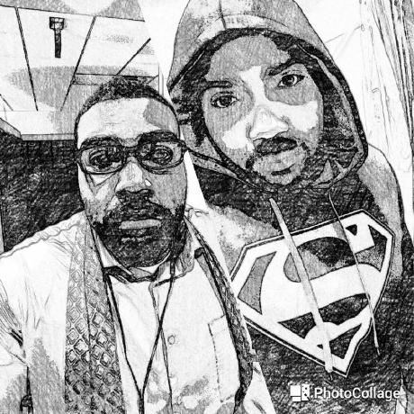

Gregory Mundy
(he/him/his)Educator | Entrepreneur | Engineer
“Every story has a beginning. Mine started on a hot summer afternoon with an IBM PS/2 Model 30 and a book on BASIC.”

- Jamaican by birth, American by choice (and also because he really wanted to vote in the 2020 Presidential Election).
- Speaks three languages but still struggles to pronounce House, Cow, Couch, and Remember
- Competed in a local Dancing with the Stars fundraiser and lost to a guy who did pushups. Got a consolation mirror ball trophy that he still treasures.
- Claims Paris, France as a visited destination, though he didn't actually leave the airport.
- Wanted to name his twin daughters Tomax and Xamot. The idea was shelved because his wife isn't a GI Joe fan and the twins aren't identical.
- Owns way too many Marvel and DC t-shirts for a grown man.
- Built a Lego Death Star, Millennium Falcon, and Ecto-1 in the same week.
- Still believes that Space Quest and Leisure Suit Larry will become live action movies. Some day.